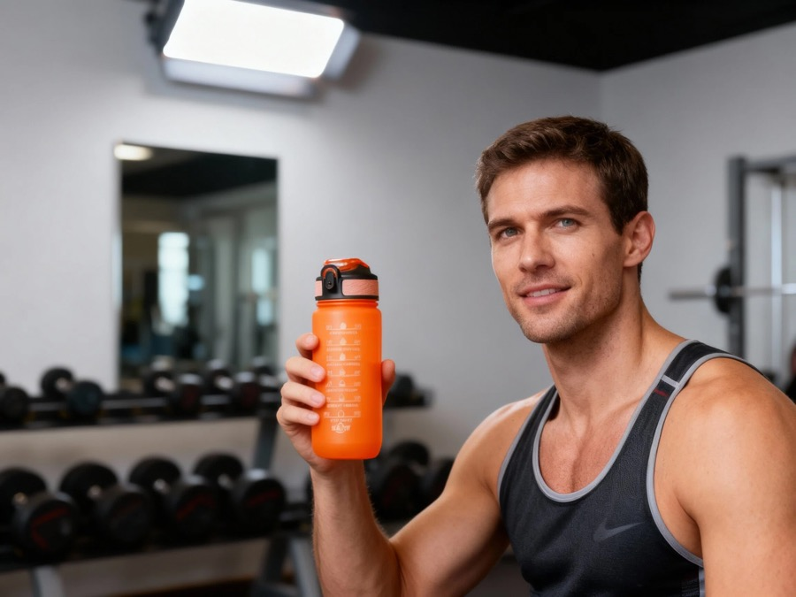
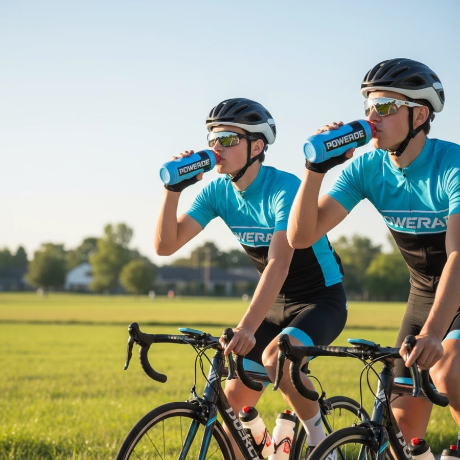
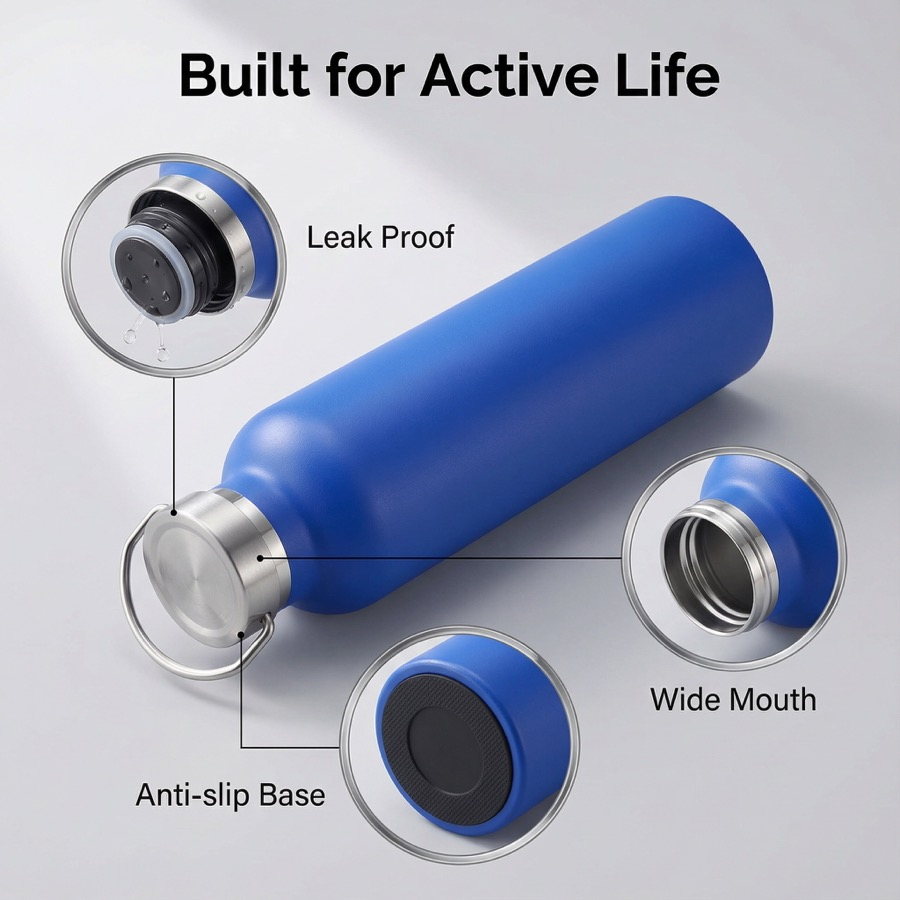

Sports Bottle Sourcing For Teams And Fitness Channels
Gyms, teams, outdoor brands and Amazon sellers comparing wide mouth, cycling and large hydration bottles.
Custom drinkware sourcing guide
HDS Drinkware, the export brand of Shanxi Huandingsheng Industry and Trade Co., Ltd., coordinates sports bottle sourcing for teams and fitness channels for gyms, teams, outdoor brands, distributors and Amazon sellers. This page covers the product, MOQ, sample, packaging, QC and shipping decisions specific to that buying intent.



Gyms, teams, outdoor brands and Amazon sellers comparing wide mouth, cycling and large hydration bottles.
This page is for sport and outdoor use cases, not general corporate gift drinkware. Selected stock-based logo projects may start from around 200 pcs; final MOQ and scope are confirmed in the quotation.
Sports bottle selection starts with the activity and drinking route: straw or direct drink, flip or screw lid, lock, wide mouth, handle or strap, and target capacity. Gym, team, cycling, outdoor and large-hydration projects require different fit, function, packing and deadline checks.
For Custom Sports Water Bottles, low MOQ is available on selected models. The exact minimum depends on the product, color, decoration, packaging and production route; custom colors and complex customization normally require a higher project-specific minimum.
Sports bottle options can use PP, PC, PETG, Tritan-style copolyester or selected stainless steel structures. The written quote should identify body, lid, straw, gasket and handle materials, capacity, intended use and available documentation for the exact model.
Logo customization support includes laser engraving, silk screen printing, UV printing, heat transfer, labels and packaging logo placement. The best method depends on product surface, artwork colors and buyer channel.
A sports bottle inspection plan can cover capacity and dimensions, lid assembly, lock and gasket fit, agreed leakage orientation and duration, strap or handle fit, logo alignment, accessories, packing and carton measurements. Performance claims are confirmed only when included in the agreed sample and inspection scope.
Product comparison
| Option | Best For | Customization Focus | Buyer Notes |
|---|---|---|---|
| Entry test order | New sellers and first projects | Stock color, simple logo, standard packing | Useful when the buyer needs to validate demand with lower inventory pressure. |
| Private label order | gyms, teams, outdoor brands, distributors and Amazon sellers | Logo, color, packaging, barcode and carton marks | Better for buyers who need a repeatable product line. |
| Gift packaging order | Gift companies and corporate buyers | Gift box, insert, card, tote bag and bundle planning | Presentation and sample approval should be confirmed early. |
| Wholesale repeat order | Distributors and wholesale buyers | Stable product, mixed colors, cartons and shipping plan | Best when reorder timing and carton data matter. |
Direct sourcing answer
Confirm the intended activity, capacity, body and component materials, drinking route, lid lock, gasket, strap or handle, color split, logo position, packaging and delivery date. Define the exact leakage check and keep it with the approved sample and bulk inspection scope.
| Use Route | Product Decisions | QC Focus | Buyer Planning Note |
|---|---|---|---|
| Gym or fitness program | One-hand opening, straw or direct drink, grip and capacity | Lid assembly, gasket, agreed leakage check and logo position | Keep the first color split controlled for replenishment |
| Team or event order | Participant count, colors, logo approval and distribution pack | Quantity by color, print consistency, accessories and carton marks | Fix the delivery deadline before artwork approval |
| Cycling or outdoor route | Carry fit, drinking opening, bottle dimensions and material | Sample fit, cap operation and use-specific agreed checks | Confirm compatibility from a physical sample |
| Large hydration bottle | Capacity, handle or strap, wide mouth, lid and accessories | Dimensions, assembly, packing protection and carton data | Dimensional freight can outweigh a small unit-price difference |
Identify the exact lid and gasket assembly, test fill level, orientation, duration and acceptance criteria agreed for the project. A broad “leakproof” label is not a substitute for a sample and written inspection method.
Send a reference photo, use scenario, capacity, quantity and color split, logo file, packaging, destination, delivery date and any fit or function requirement. HDS can then compare like-for-like models instead of unrelated sports-bottle photos.
| Method | Best Use | Strength | Notes |
|---|---|---|---|
| Laser engraving | Stainless steel and premium gifts | Durable, clean and professional | Good for corporate and private label positioning. |
| Silk screen printing | Simple logos and larger runs | Clear and cost-effective | Works best with simpler artwork. |
| UV printing | Color logos and detailed artwork | Better visual detail | Sample review is recommended before bulk order. |
| Label or packaging branding | Fast tests and gift sets | Flexible and practical | Useful when buyers want branding without complex setup. |
| Packaging | Best For | Support Details |
|---|---|---|
| Standard box | Samples and wholesale orders | Basic protection and practical carton packing. |
| Color box | Amazon, Shopify and retail channels | Can support barcode, brand information and product presentation. |
| Gift box | Corporate gifts and holiday programs | Can coordinate inserts, cards, sleeves and custom box print. |
| Custom bundle packaging | Gift companies and promotional buyers | Can combine drinkware, cards, tote bags, labels and carton marks. |
Custom Sports Water Bottles for Gyms, Teams and Outdoor Buyers is intended for gyms, teams, outdoor brands, distributors and Amazon sellers. Gyms, teams, outdoor brands and Amazon sellers comparing wide mouth, cycling and large hydration bottles. HDS uses the buyer's channel, quantity, destination and launch timing to narrow the product, sample, packaging and shipping route.
Quote and sample checklist
Send these details together and the sales team can compare realistic product, logo, packaging and shipping options faster.
Confirm capacity, material, drinking route, lid lock, gasket, strap or handle, color split, logo position, packaging, delivery date and the exact leakage check. Keep these details with the approved sample and bulk inspection checklist.
The practical method depends on body material, curvature, texture, artwork and expected use. Silk screen, UV printing, heat transfer, labels or packaging branding may be considered after checking the exact surface and approving a physical proof.
MOQ for selected custom sports water bottles for gyms, teams and outdoor buyers projects may start from around 200 pcs. Final MOQ depends on product style, material, color, logo method, packaging and current supply availability.
HDS can discuss 1000ml sports bottles, wide mouth bottles, cycling bottles and large hydration bottles by capacity, material, color, finish, lid, accessories, logo method and packaging requirement.
Material options include PC, PP, PETG, Tritan-style plastic and stainless steel options. The suitable option depends on the target market, use case, compliance request and price range.
Send a product photo or reference link, quantity, logo file, packaging request, destination country and target delivery time. These details help HDS prepare a more relevant quotation.
This page is written for gyms, teams, outdoor brands, distributors and Amazon sellers who need custom drinkware sourcing, logo customization, packaging support and export coordination from China.
Custom water bottles with logo | Custom plastic water bottles | Custom kids water bottles | Drinkware quality control | Logo method guide
Send your product photo, quantity, logo requirement, packaging request and destination country. HDS will help recommend suitable product options, logo methods, packaging solutions and shipping terms for your project.